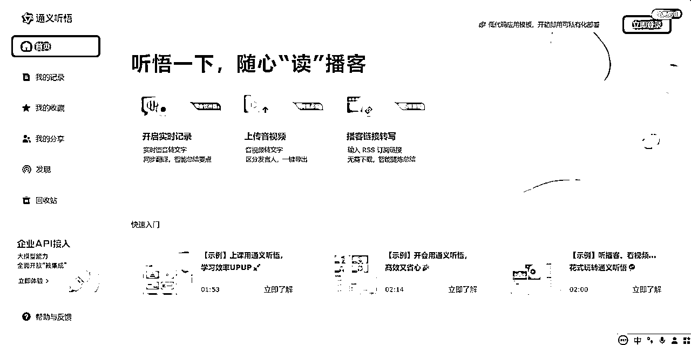
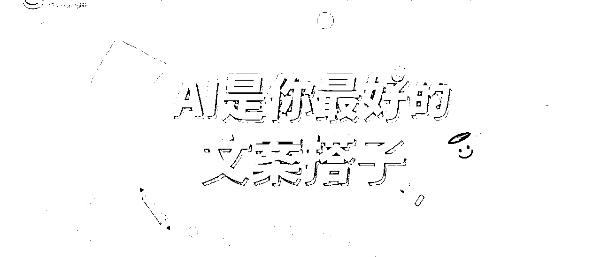
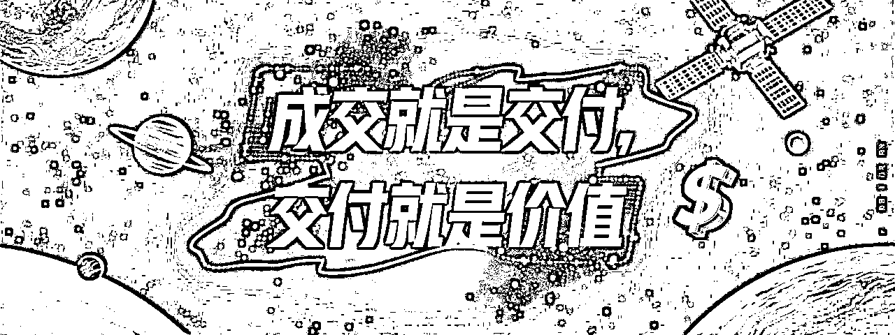
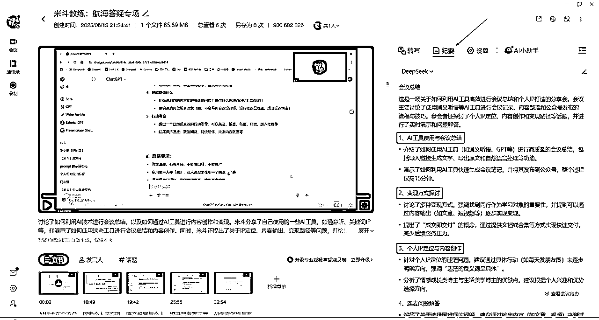
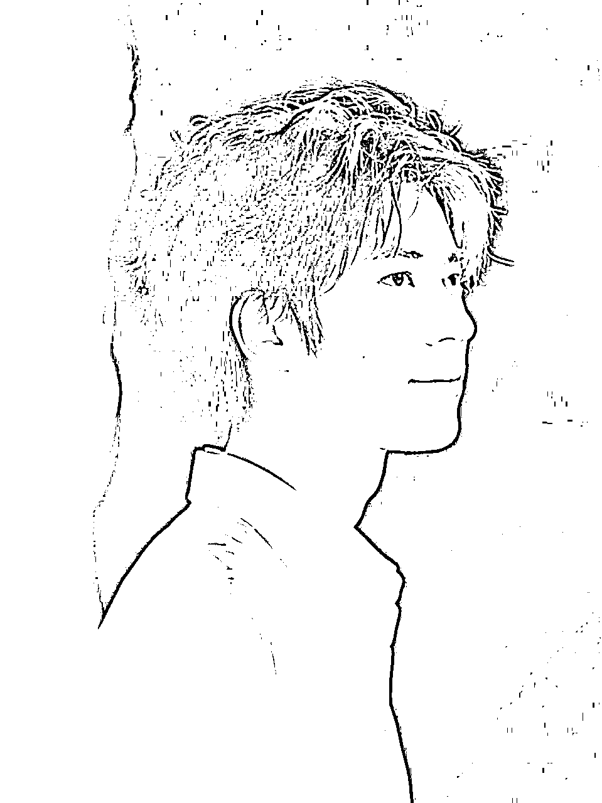
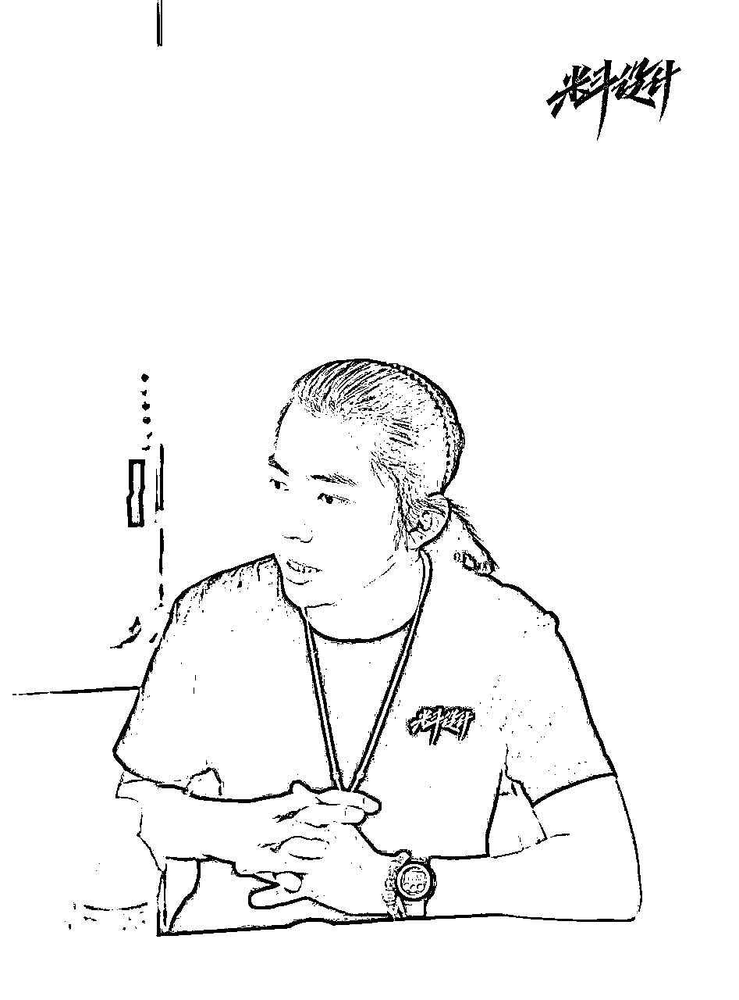

来源：https://s296cam1nz.feishu.cn/docx/MVymd2nTCoiy5ExZCSscpfjDnVf
Hello，我叫米斗，我是AI商业提效实战教练，擅长用「AI + 设计 + 内容」的方法，帮助中小创作者与品牌主打造能赚钱的个人IP与高转化产品体系。
大家好，我是米斗，一位用AI和设计跑结果的内容创作者。
这篇是我在 6 月 12 日直播答疑之后的完整内容回顾 + 行动笔记整理。哪怕你完全是小白，看完也能理清楚：
1.怎么用 AI 工具高效写内容
2.如何做出自己的个人IP
3.没有经验、没方向，怎么起步
4.做了内容后，怎么定价、怎么成交、怎么收钱
不用担心工具不会、不懂定位、不懂变现，我都用最接地气的方式，讲给你听。
我是米斗，深圳独立创作者，三件事我最擅长：
先说结论：AI写内容，比你想象中要简单得多。
这场直播里我重点讲了一个工具：通义听悟（阿里出品）。

它的作用就像“文字速记秘书”——你边开会、边讲、边直播，它就能边听边记录，整理成文字，还能智能提炼结构、关键词。
👉 然后你把这段内容，丢给 ChatGPT，配上提示词，它就能自动生成一篇「公众号文章」或者「学习笔记」。
再配个图（比如用“积木”生成海报），5 分钟一篇内容搞定。而且自动排版，复制粘贴到公众号就能发。
对我来说，现在的内容创作是这样的流程：
这叫做“内容流水线”，不拼熬夜、不靠灵感，靠系统。
🔧 工具组合推荐：
1.“你不是写不好内容，而是没有一套写内容的系统。”
2.“内容不是靠才华，是靠流程。”
3.“AI是你最好的文案搭子。”

以前我写一篇文章，要2小时起，现在10分钟完成一篇爆款雏形。
最大转变是什么？
我从“一个人在打仗”变成“AI+我”一起打仗。
就像我在直播中说的：我们不是要成为文豪，而是要用内容带来影响力和变现力。AI就是我们的加速器。
1.注册通义听悟，录一段你讲的内容（比如给朋友讲AI的心得）。
2.用 ChatGPT 提示词：“请帮我把这段话整理成一篇适合公众号发布的文章。”
3.发第一篇内容，不要管完美与否，先发，先试。
很多人问我：“米斗，你做设计和内容能赚到钱，是怎么定价和成交的？”
这场直播，我把我的核心变现模型给大家拆开说了。
先说一个关键公式：
内容 ≠ 赚钱，成交 + 交付 才是关键。
很多人发了内容、涨了粉，却不知道接下来该怎么变现。
我给你一个最简单可复制的「三层变现梯度」：
很多人一开始就想卖高价，但我建议从 99 元的知识型产品开始做起：
🎯 一份整理好的AI提示词合集 + 实操教程，就是一个能变现的产品。
📌 我的AI合集文档上线后：
这个文档不是拿来当「内容」，而是当「产品」卖的。
“你连99块钱的文档都不愿意交付，怎么成交2980的实战营？”
“成交就是交付，交付就是价值。”
“你的同行怎么卖，你就怎么卖。”

过去我总觉得要做很复杂的系统、很长的训练营才值钱。但现在我明白了：
用户不是买内容，是买你解决问题的能力。
你能把复杂的东西，整理清楚，讲明白，解决问题，这就是价值。
1.整理你最擅长的5个问题 → 每个问题写一页解决方案。
2.用飞书打包成一个合集 → 定价99元上架/发圈/群内售卖。
3.引导用户加你微信 → 升级服务 → 转化为长期陪跑。
你不是不够厉害，而是没把内容变成产品；
你不是缺执行力，而是没有具体路径。
从今天开始，试着用AI帮你做“第一稿”，再用你的经验去打磨。
先赚到第一个99，才有后面的500、2980。
我是米斗，一个用AI+设计跑结果的人。
—— 2025/06/13 米斗 | AI商业提效实战教练
录制：米斗教练：航海答疑专场
日期：2025-06-12 21:45:02
录制文件：https://meeting.tencent.com/crm/2qvL3o4O82

米斗最后说：知识不值钱，改变才值钱。别光看，动手落地实战才有用。你是最棒的，加油哦~

